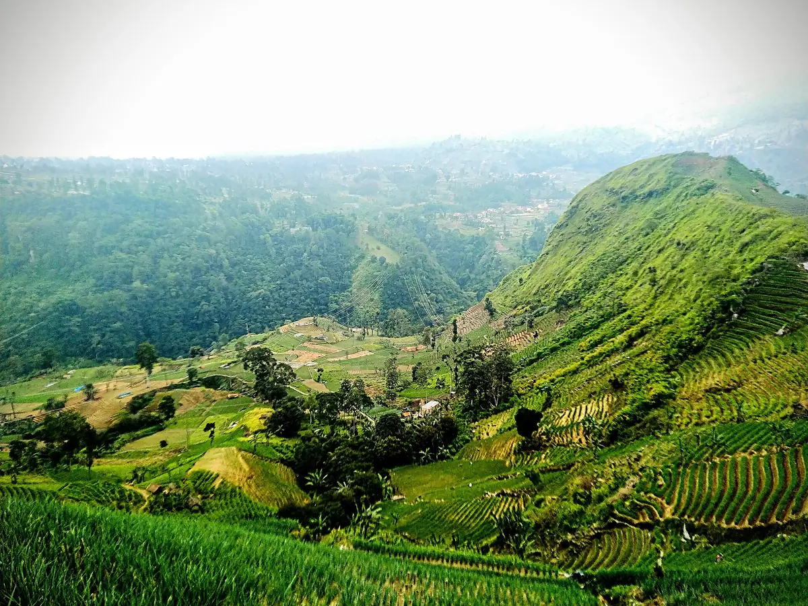

Retakan di tanah atau lereng
BNPB: retakan yang sejajar dengan tebing.
Bukit bisa tenang, bisa juga bergerak. Gulir ke bawah dan lihat bagaimana lereng berubah, lalu pelajari apa yang perlu kamu lakukan.
Lima bab, lima adegan
Setiap bab dibuka dengan diorama kertas yang berubah: dari bukit yang tenang sampai lereng yang bergeser. Pilih bab yang mau kamu buka.
Catatan sumber: ringkasan ini disarikan dari siaran resmi BNPB dan Badan Geologi (Kementerian ESDM). Sebagian sumber berupa berita kejadian, bukan buku panduan. Ringkasan ini tidak menggantikan arahan BPBD dan petugas setempat.

Pengertian
Longsor terjadi ketika tanah di lereng yang labil bergerak turun dan menimbulkan bencana, terutama bagi warga yang tinggal di tempat lebih rendah. Badan Geologi menyebut kejadian ini gerakan tanah longsor.
BNPB menyebut hujan yang berlangsung beberapa hari. Menurut Badan Geologi, hujan lebat menambah tekanan air di dalam tanah dan menurunkan kekuatannya sehingga lereng gagal.
Getarannya dapat melemahkan kekuatan lereng.
Seperti pemotongan lereng dan peledakan di area tambang.
Sumber: BNPB, "Tanah Longsor" (27 Des 2017); Kementerian ESDM/Badan Geologi, "Curah Hujan Tinggi, Masyarakat Diminta Waspadai Gerakan Tanah Longsor" (6 Feb 2018); Kementerian ESDM/Badan Geologi, "Longsor Terjang Desa Pasirlangu, Badan Geologi Ingatkan Ancaman Longsor Susulan" (25 Jan 2026).


BNPB: retakan yang sejajar dengan tebing.
Mata air baru muncul, atau air mata air atau sumur tiba-tiba keruh.
Batang atau tiang yang tadinya tegak kini condong.
Butiran tanah atau batu kecil luruh dari tebing.
Terdengar dari dalam tanah, tanpa sumber yang terlihat.
Waspada
Warga yang tinggal di perbukitan atau dekat tebing diminta mengenali tanda awal berikut dan terus memantau keadaan sekitar. Lima kartu di atas muncul dari diorama: itulah lima tandanya.
Sumber: BNPB, "Tanah Longsor di Tapanuli Selatan Telan Dua Korban Meninggal" (23 Feb 2025); Badan Geologi, "Tanah Longsor Kembali Terjadi di Ponorogo, Masyarakat Diminta Waspada" (9 Apr 2017).

Sebelum
Lihat tas di diorama: makanan, senter, uang, dan obat masuk satu per satu saat kamu menggulir. Siapkan sebelum hujan datang.
Waspadai hujan dengan curah tinggi dan simak informasi tentang hujan serta kemungkinan longsor. BNPB menyebut radio sebagai salah satu sarana.
Makanan dan minuman siap saji, senter beserta baterai cadangan, uang tunai secukupnya, dan obat-obatan sesuai kebutuhan.
Jangan menebang tanaman keras di lereng, jangan menggali lereng secara tegak lurus, dan atur aliran air permukaan di lereng.
Bersiaplah mengevakuasi diri begitu pihak berwenang menginstruksikannya.
BNPB (23 Feb 2025) mengimbau warga mengevakuasi diri ke tempat yang lebih aman bila hujan intensitas tinggi berlangsung lebih dari satu jam.
Sumber: BNPB 2017; Badan Geologi 2017; BNPB 2025 (judul seperti di bab 01 dan 02).

Saat
Di diorama, lapisan lereng meluncur turun sementara jalur oranye menyala ke tanah tinggi yang lapang. Intinya: menjauh dari lereng, menuju tempat lapang.
Bila terdengar suara gemuruh, segera keluar menuju tempat lapang yang tidak terhalang.
Cari tempat lapang dan perhatikan sisi lereng atau tanah yang longsor.
Ikuti arahan BPBD dan petugas setempat.
Sumber: BNPB, "Tanah Longsor" (27 Des 2017).


Sesudah
Daerah bencana dan sekitarnya masih berpotensi longsor susulan, terutama saat dan setelah hujan deras, sehingga warga diminta mengungsi ke lokasi yang aman.
Pakai sepatu khusus dan peralatan keselamatan, pastikan pijakan cukup kokoh, jangan memperburuk keadaan di reruntuhan; atau tunggu petugas.
Badan Geologi mengingatkan petugas agar tidak melakukan penanganan atau pencarian korban saat dan sesudah hujan deras karena risiko longsor susulan masih tinggi.
Sumber: BNPB 2017; Badan Geologi 2017; Badan Geologi 2026.

Aparat desa dan BPBD kabupaten/kota. Kontak BPBD Provinsi Jawa Barat di bpbd.jabarprov.go.id.
SIAGA Longsor belum memberikan peringatan dini maupun perintah evakuasi. Prediksi harian masih percobaan. Tujuan dan rute evakuasi antardesa belum tersedia. Ikuti arahan BPBD atau petugas setempat.